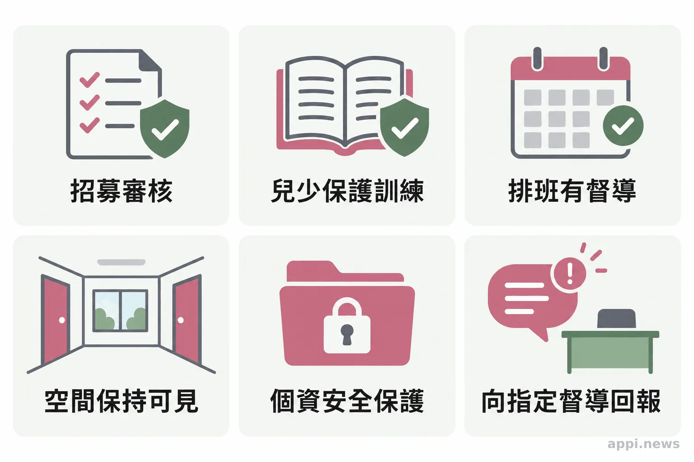

兒少保護怎麼做？讓社區陪伴接上求助制度
民國114年（2025）台灣出生數為107,812人；兒少保護通報表列136,592件次，同一事件可能由不同責任通報人員通報。從113通報、學校觀察到社區陪伴，認識大人能做的事與志工界線。
孩子放學後，有時要自己等家人下班；家長也可能正承受照顧與工作的拉扯。這些日常情境不代表家庭一定有危險，卻提醒我們，當照顧出現困難時，身邊要有可以求助的大人與服務。
內政部《人口統計季刊》記載，民國114年（2025）出生數為107,812人。衛福部《兒童及少年保護案件資料》114年度附件所列「兒少保護通報件數及案件類型」表，總計為136,592件次；同一事件可能由不同責任通報人員分別通報，因此件次不等於受害兒少人數。這項數字呈現通報量，不能直接說明哪個時段風險最高。孩子與家庭需要容易找到的支持，也需要清楚的保護程序。
一、疑似兒少受不當對待，先求助專業
有疑慮可撥113諮詢或通報；若孩子正面臨立即危險，先打110。民眾不必自行查證或質問孩子，客觀說明所見即可。
政府依通報進行分流、評估與後續處遇，視需要串連社政、警政、醫療、司法及安置資源。學校、親友或鄰里若觀察到持續缺課、明顯傷勢、照顧不足或孩子表達害怕等情況，可以把時間、地點和看見的事實告訴113或地方社政，由專業人員判斷下一步。
二、社區陪伴可以補上日常支持
民間團體可在合法合作及服務規範下提供課後陪伴、家庭支持與活動，讓孩子多一個穩定的求助入口；通報、調查和保護決策仍由政府及專業人員負責。
衛福部「兒少及家庭社區支持服務方案（守護家庭小衛星）」已結合民間力量提供社區支持，依地方需求發展預防與支持服務。社會安全網2.0也以家庭為中心、社區為基礎，重視跨網絡合作。
台灣微光希望關懷協會希望評估社區課後陪伴的可能性。若未來取得主管機關核定並完成合作程序，才可依核定服務內容規劃據點；這是規劃方向，不代表協會現已獲准承辦。服務若涉及轉介兒少，須先確認服務同意、必要的個資授權、督導及異常回報責任。
「以家庭為中心，以社區為基礎。」衛生福利部《強化社會安全網計畫2.0》以此作為核心價值，並將網絡合作與公私協力列為服務策略。
三、志工陪伴要有明確界線
志工可以陪伴、觀察並向指定督導回報；不自行調查、判定是否受虐、質問孩子或帶孩子離開家庭，保護決策交由主管機關與專業人員。
要讓陪伴安全且持續，服務單位應先訂出招募審核、兒少保護訓練、排班督導、出入與接送、事件回報和資料保管方式。接觸孩子宜安排在可見的公共空間，避免志工私下單獨帶孩子返家，也不把姓名、照片或談話轉傳到私人群組。具體要求應依服務型態、兒少相關法規及所在地主管機關規定確認。

四、一般人可以從三件小事開始
記住113與110、留意孩子持續的變化，並選擇有訓練和督導制度的服務參與。若有疑慮，讓專業單位接手評估。
- 將113存入手機；遇到立即危險打110。
- 看見疑慮時記下客觀情況，不拍攝或散布孩子身分與影像。
- 想投入陪伴，可先詢問所在地社福中心、學校或合法民間團體，了解訓練、督導與服務規範。
關心孩子，需要耐心，也需要尊重界線。社區能提供穩定支持，但不能取代正式保護系統。先把求助電話存好，就是今天可以完成的一步。
- 衛福部114年度兒少保護通報表列136,592件次；同一事件可能由不同責任通報人員分別通報。
- 志工負責陪伴、觀察、回報；調查與保護決策由專業人員處理。
- 協會據點仍屬規劃方向，須取得核定並完成合作程序後，才能依核定內容推動。
- 疑似兒少受不當對待可撥113；有立即危險撥110。
常見問題
Q1: 沒有確定證據，也可以打113嗎？
可以。說明看見的客觀情況與擔心之處，由專業人員協助判斷，不必先自行調查。
Q2: 113和110有什麼差別？
113提供保護相關諮詢與通報；孩子若面臨立即人身危險，請先打110。
Q3: 志工可以把孩子帶回家照顧嗎？
不可以。志工應聯繫督導或主管機關，由專業人員評估後續安排。
Q4: 社區據點開始服務前要準備什麼？
應先確認主管機關要求、服務資格與合作程序，再建立人員審核、訓練、督導、個資和緊急回報流程。
Q5: 想參與兒少陪伴，可以從哪裡開始？
先詢問所在地社福中心、學校或合法民間團體，選擇提供訓練、督導與明確服務規範的機會。
參考文獻
出生與通報數據、社區支持方案、求助管道及法規內容，均以以下官方資料為依據。
- 內政部（2026）。《人口統計季刊：民國114年冬季季刊》，出生統計。https://www.ris.gov.tw/documents/data/5/2/DemographicQuarterly_Winter2025.pdf
- 衛生福利部保護服務司（2026）。《兒童及少年保護案件資料》。https://dep.mohw.gov.tw/dops/fp-1312-7798-105.html
- 衛生福利部（2025）。《強化社會安全網計畫2.0（115－119年）核定本》。https://www.mohw.gov.tw/dl-99609-bf16bc85-5f84-431d-9cc3-40ee864d797f.html
- 衛生福利部社會及家庭署（2024）。《兒少及家庭社區支持服務方案（守護家庭小衛星）》。https://www.mohw.gov.tw/dl-98207-a5864669-7c0a-4781-9f94-e179eb5a78d3.html
- 衛生福利部保護服務司（2024）。《113保護專線介紹》。https://dep.mohw.gov.tw/DOPs/cp-1183-6499-105.html
- 全國法規資料庫（2026）。《兒童及少年福利與權益保障法》。https://law.moj.gov.tw/LawClass/LawAll.aspx?pcode=D0050001
本文同步刊於 appi.news。